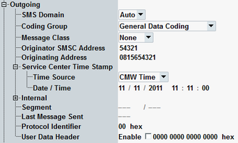

The following section describes the configuration of outgoing text messages.

Selects the core network domain for the outgoing SMS. If "Auto" is selected, the domain of actual connection is used (CS domain is preferred).
Remote command:Defines how to interpret SMS signaling information. The "general message coding" and "data coding / message class" coding groups are defined in 3GPP TS 23.038, chapter 4.
Remote command:Specifies the default savings of the SMS message as defined in 3GPP TS 23.038. The MS settings override any default settings by selecting its own routing.
Remote command:Specifies the phone number of the SMS center.
Remote command:Specifies the phone number of the SMS originating UE.
Remote command:Configures date and time information used by service center time stamp.
The section is only visible if R&S CMW-KS210 is available.
- "CMW Time"
Selects the current CMW (Windows) date and time as source. The Windows settings determine the service center time stamp date and time. - "Date / Time"
Selects the parameters "Date / Time" as a time source.
Option R&S CMW-KS210 is required.
Remote command:Defines the service center time stamp date and time to be used if "Time Source" is set to "Date / Time".
Option R&S CMW-KS210 is required.
Remote command:Refer to "Outgoing SMS: Message Creation".
Displays the currently processed SMS segment and the total number of segments.
A concatenated SMS message is larger than 160 characters. All segments belong to one concatenated SMS message.
Remote command:Displays the status of the last sent message.
Remote command:Specifies the TP protocol identifier (TP-PID) value to be sent. The meaning of the values is defined in 3GPP TS 23.040 chapter 9.2.3.9.
Remote command:To add a header to the TP user data field, enable the checkbox and configure the header via the hex value. The structure of the user data header is defined in 3GPP TS 23.040, section 9.2.3.24.
- Information element identifier (IEI, one octet)
Currently supported values: #H05, #H70 to #H7F - Length of information element (IEIDL, one octet)
- Information element data (IED, 0 to n octets)
The signaling application sets the TP-UDHI automatically, according to the checkbox. With enabled checkbox, it sends the hex value to the UE and uses the correct number of fill bits in the header. It evaluates the IEIa and applies the correct message concatenation and header repetition.
Remote command: